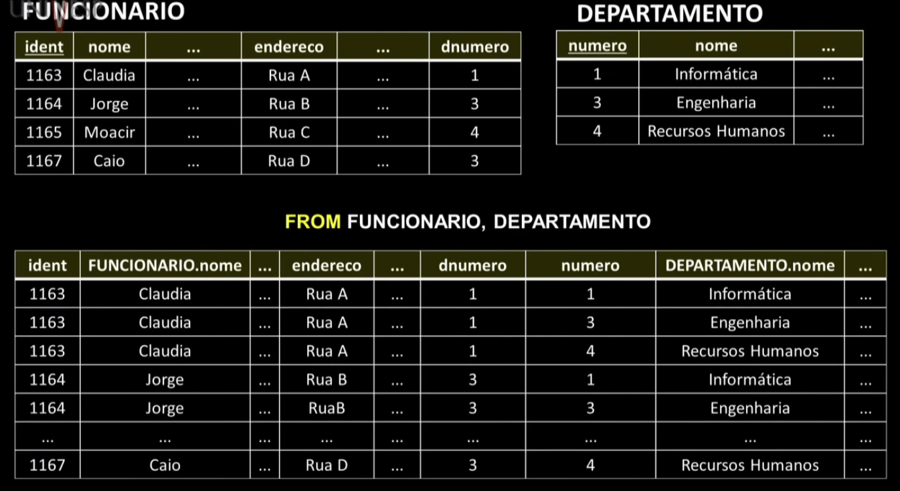
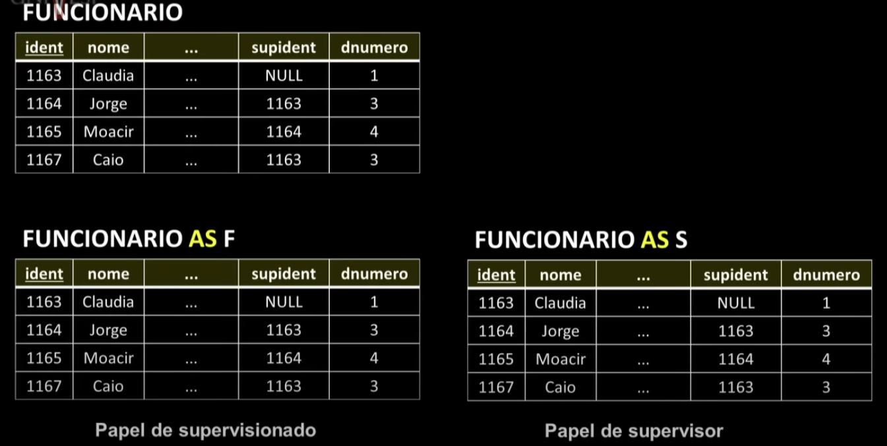

Disciplinas
-
BANCO DE DADOS-T01-2024-1 Concluído
Materiais
Vídeo 1 - Bancos de Dados - Aula 14 - Linguagem de consulta – SQL Parte II. sendProfessor ministrante: Sarajane Marques Peres.
Conteúdo
Linguagem de consulta – SQL.
SQL.
Esquema para o modelo Relacional do contexto didático: EMPRESA.
FUNCIONARIO (ident, nome, sobrenome, endereco, dtnasc, salario, sexo, supident, dnumero)
DEPENDENTE(fident, nome, dt_nasc, sexo, relacionamento)
DEPARTAMENTO(numero, nome, gident, dtinicio)
LOCALIZACOES(dnumero, localizacao)
PROJETO(numero, nome, localizacao, dnumero)
TRABALHA_EM(pnumero, fident, horas)
Algumas simplificações nos nomes de variáveis foram realizadas para facilitar o uso delas nas consultas. A chave primária, em cada relação, está sublinhada.
SQL-Structured Query Language:- Linguagem de banco de dados com recursos para definição de dados, consulta aos dados e atualização de dados.
- Permite especificar restrições que devem ser impostas aos dados possibilitando a implementação da integridade e segurança da informação armazenada.
SQL é uma linguagem padrão para SGBDs comerciais. Há um padrão, estabelecido pelo American National Standards Institute (ANSI) e pela International Standards Organization (ISO).
- Sugestões de consulta para implementações comerciais:
- https://www.postgresql.org/docs/9.0/static/sql.html
- https://www.postgresql.org/docs/9.0/static/bookindex.html
- http://dev.mysql.com/doc/refman/5.7/en/sql-syntax.html
- http://dev.mysql.com/doc/refman/5.7/en/literals.html
Estrutura básica de um consulta para extração de informação em SQL.
- SELECT (lista de atributos >
- FROM (lista de relações/tabelas >
- WHERE (condição>
- em que:
- (lista de atributos >: é uma lista de nomes de atributos cujos valores serão recuperados pela consulta.
- (lista de relações/tabelas >: é uma lista de nomes de relações necessárias para encontrar a informação desejada na consulta.
- ( condição >: é uma expressão condicional (booleana) que identifica quais tuplas das relações mencionadas devem ser consideradas na consulta.
Exemplos:
Consulta 18: Recupere as datas de nascimento e os endereços dos funcionários que possuem o sobrenome 'Brotas'.
SELECT dtnasc, endereco FROM FUNCIONARIO WHERE sobrenome = 'Brotas';
Consulta 19: Selecione os identificadores de todos os funcionários.
SELECT ident FROM FUNCIONARIO;
Consulta 20: Recupere os nomes e os endereços de todos os funcionários que trabalham para o departamento de engenharia.
SELECT FUNCIONARIO.nome, endereco
FROM FUNCIONARIO, DEPARTAMENTO
WHERE DEPARTAMENTO.nome = 'Engenharia' AND numero = dnumero;

Consulta 21: Recupere todos os atributos de FUNCIONARIO e de DEPARTAMENTO, considerando que o funcionário trabalha para o departamento 'Engenharia'.
SELECT *
FROM FUNCIONARIO, DEPARTAMENTO
WHERE DEPARTAMENTO.nome = 'Engenharia' AND numero= dnumero;
Consulta 22: Para cada projeto localizado em 'São Paulo', liste o número do projeto, o número do departamento que controla o projeto, eo nome, endereço e data de nascimento do gerente deste departamento.
SELECT PROJETO.numero, PROJETO.dnumero,
FUNCIONARIO.nome, endereco, dtnasc
FROM PROJETO, DEPARTAMENTO, FUNCIONARIO
WHERE PROJETO.dnumero = DEPARTAMENTO.numero AND
gident = ident AND PROJETO.localizacao = 'São Paulo';
Consulta 23: Para cada funcionário, recupere seu nome e o nome do seu supervisor imediato.
SELECT F.nome, S.nome
FROM FUNCIONARIO AS F, FUNCIONARIO AS S
WHERE F.supident = S.ident;

Consulta 24: Recupere os salários de todos os funcionários.
SELECT ALL salario FROM FUNCIONARIO;
Consulta 25: Recupere os valores distintos de salários praticados na empresa.
SELECT DISTINCT salario FROM FUNCIONARIO;
Consulta 26: Faça uma lista de números de projetos que envolvem um funcionário cujo sobrenome é 'Silva'. O envolvimento do funcionário pode ser como trabalhador ou como gerente do departamento que controla o projeto.
(SELECT DISTINCT PROJETO.numero
FROM PROJETO, DEPARTAMENTO, FUNCIONARIO WHERE PROJETO.dnumero= DEPARTAMENTO.numero AND
gident ident AND sobrenome = 'Silva')
UNION
(SELECT DISTINCT PROJETO.numero
FROM PROJETO, TRABALHA_EM, FUNCIONARIO
WHERE PROJETO.dnumero = TRABALHA_EM.pnumero AND
TRABALHA_EM.fident = ident AND sobrenome = 'Silva');
Tuplas em duplicidade serão eliminadas do resultado.
SELECT nome, sobrenome
FROM FUNCIONARIO
WHERE endereco LIKE '%SP%';
Consulta 28: Recupere todos os funcionários que nasceram nos anos de 1950.
SELECT nome, sobrenome
FROM FUNCIONARIO
WHERE dtnasc LIKE '__/__/195_';
Consulta 29: Recupere a lista de funcionários e de projetos nos quais eles trabalham, ordenada por departamento. Dentro de departamento, ordene por nome do funcionário.
SELECT D.nome, F.nome, P.numero
FROM DEPARTAMENTO AS D, FUNCIONARIO AS F,
TRABALHA_EM AS T, PROJETO AS P
WHERE D.numero = F.dnumero AND F.ident = T.fident
AND T.pnumero = P.numero
ORDER BY D.nome ASC, F.nome ASC;
Consulta 30: Recupere os nomes de todos os funcionarios que não possuem supervisores.
SELECT nome
FROM FUNCIONARIO
WHERE supident IS NULL;
Exemplos de uso de JOIN.
SELECT F.nome, endereco
FROM (FUNCIONARIO JOIN DEPARTAMENTO ON dnumero = numero)
WHERE DEPARTAMENTO.nome = 'Engenharia';
SELECT F.nome, S.nome
FROM (FUNCIONARIO AS F JOIN FUNCIONARIO AS S ON F.ident = S.supident);
Exemplos de funções agregadas.
SELECT SUM(salario), MAX(salario), MIN(salario), AVG(salario)
FROM FUNCIONARIO;
SELECT nome,
FROM FUNCIONARIO
WHERE (SELECT COUNT(*)
FROM DEPENDENTE
WHERE ident = fident) >= 2;
Exemplo: GROUP BY e HAVING.
SELECT Dnome, COUNT(*)
FROM DEPARTAMENTO AS D, FUNCIONARIO AS F
WHERE D.numero = F.dnumero AND salario > 40.000
GROUP BY Dnome
HAVING COUNT(*) > 5;
Linguagem de consulta - SQL Parte II.
Estes slides estão baseados na bibliografia: